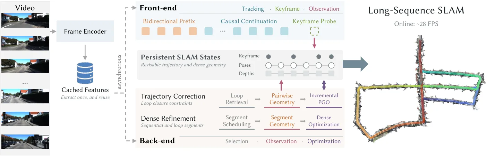
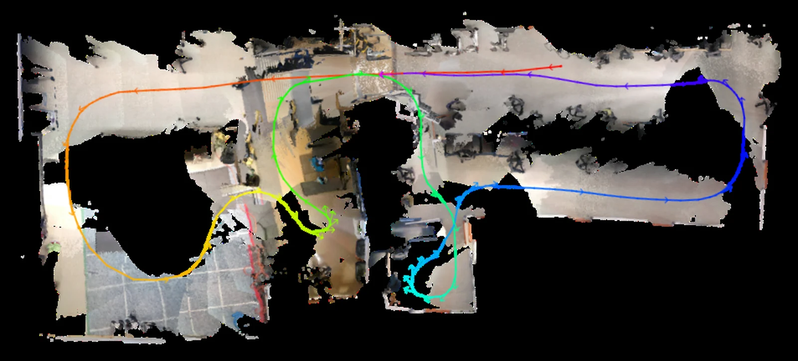
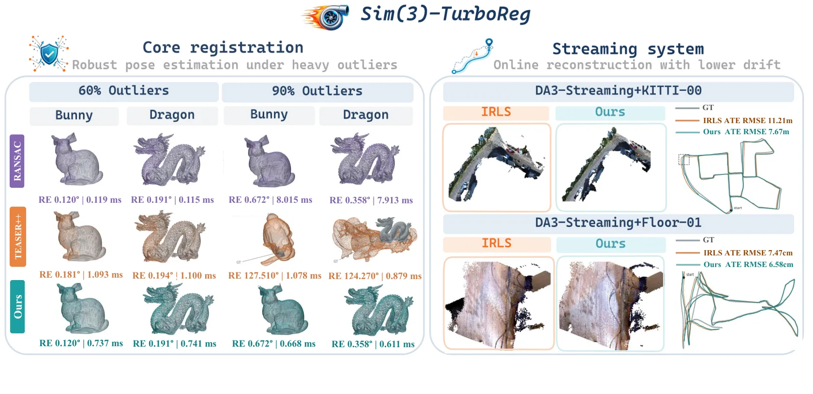
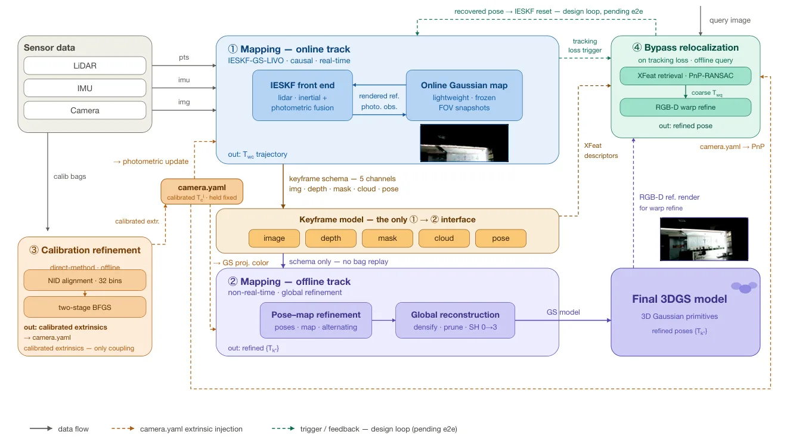
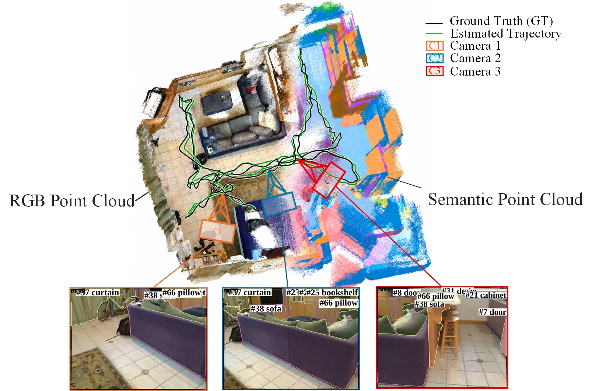
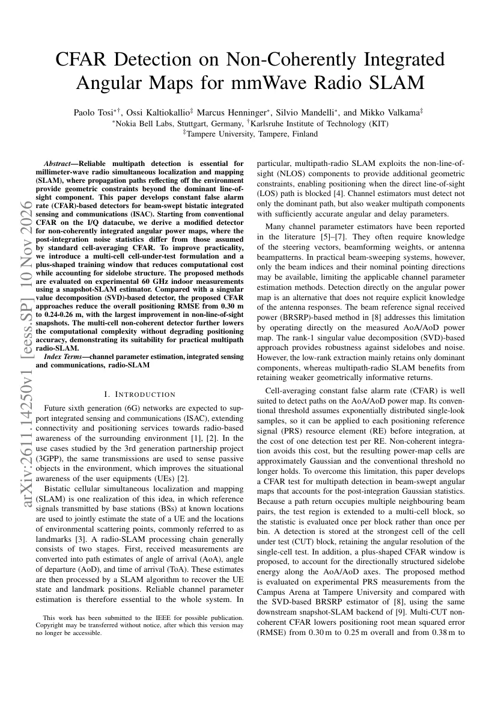
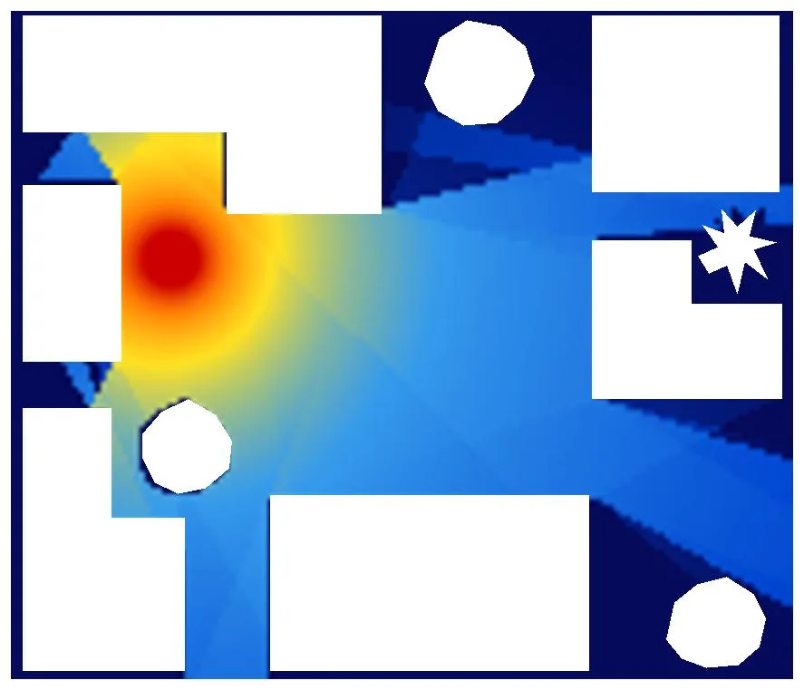

新论文 · 日期 2026-11-09 · score 30 · S层 · Geometry Foundation Models / 3D Foundation Models · cs.RO, cs.CV
内容级别：完整单篇海报
作者：Yifan Luo, Takafumi Matsumaru, Vibekananda Dutta, Xin He
评分 8.6/10
动态 SLAM3D 高斯溅射扩散补全来源标签SAM2Metric3D v2单目 RGB
一句话工作总结：作者报告平均 ATE RMSE 为 TUM RGB-D 1.2 cm、BONN RGB-D 2.7 cm（BONN 上为对比方法最低），StaDy4D 三段平均 PSNR 比 WildGS-SLAM 高 4.60 dB。消融显示：去掉全部运动掩码，TUM 平均 ATE 从 1.2 cm 退化到 3.1 cm；去掉生成高斯的替换机制，动态掩码内 PSNR 从 22.1 dB 掉…
论文针对单目 RGB 动态场景：3DGS-SLAM 的静态场景假设在运动物体前失效，而把动态观测整块剔除又会让被遮挡的静态背景缺少观测约束，出现空洞或糊化。DPGS-SLAM 用光流模型 OCLR 周期性地发现运动候选，用 SAM2 做掩码细化与跨帧传播，得到时序一致的动态掩码；对满足“未知面积比例”阈值的关键帧，异步调用经 LoRA 微调的 Stable Diffusion Inpainting 补全被遮挡背景，…
This paper presents DPGS-SLAM (Diffusion-Prior and Provenance-Aware Monocular Gaussian Splatting SLAM) for dense mapping in environments containing dynamic objects. Dynamic observations can contaminate camera…

新论文 · 日期 2026-11-08 · score 19 · S层 · Geometry Foundation Models / 3D Foundation Models · cs.CV
内容级别：完整单篇海报
作者：Jian Gao, Lin-Zhuo Chen, Yihang Chen, Jiagang Chen
评分 9/10
流式 3D 基础模型SLAM 系统设计回环检测增量位姿图Sim(3)视觉定位检索
一句话工作总结：在 KITTI、VBR、Oxford Spires 三个无标定基准上平均 ATE 分别 7.56 m、5.15 m、3.07 m，比各自第二好的无标定方法低 42.7%–48.3%；KITTI Sequence 00 上 29.1 FPS（518×154，RTX 5090D）。消融最能说明问题：只加回环检索与 iPGO、不做几何校验，KITTI 平均 ATE 从 15.28…
流式 3D 基础模型（3DFM）能在线给出相机位姿与稠密几何，但预测一旦发出就固定，回环无法修正累积漂移，因此还不能直接替代 SLAM。Map2SLAM 的做法是保持 LingBot-Map 冻结，只训练一个 180 万参数的 SALAD 检索头，把模型的预测当成外部持久 SLAM 状态的“观测”：前端用因果续推逐帧跟踪，用 Keyframe Probe 决定提交还是回滚 KV 更新；后端异步选择历史帧，用双向前缀…
Streaming 3D foundation models (3DFMs) estimate camera poses and dense geometry online, but they fall short of SLAM: their predictions are fixed once emitted, so loop closures cannot correct accumulated drift.…

新论文 · 日期 2026-11-07 · score 18 · S层 · Geometry Foundation Models / 3D Foundation Models · cs.RO
内容级别：完整单篇海报
作者：Otavio Ribas, Jacopo Panerati, Pierre-Yves Lajoie
评分 8.8/10
单目 SLAM米制尺度Depth Anything 3锚帧尺度串联位姿图SE(3) 评测退化场景
一句话工作总结：TUM RGB-D 上平均 ATE 0.028 m（Sim(3)）/0.078 m（SE(3)），Replica 0.008/0.045 m，7-Scenes 0.053/0.070 m；后两者在无标定方法中最低。尺度偏差分别为 2.1%、5.0%、0.8%，而纯 DA3 流式（DA3-Streaming）为 12.9%、4.1%、2.9%。速度 25.3–162.4 FPS…
几何基础模型能从单目图像给出稠密几何和相机参数，但可靠 SLAM 还要求跨重建一致的尺度和正确的数据关联。DASH-SLAM 把预训练 Depth Anything 3（DA3）的米制深度接进一个共享关键帧的位姿图，不做任务特定微调：相邻两批重建共享两个锚帧，用锚帧上两张深度图的中值深度比估计相对尺度，再用阻尼因子 g 把尺度比按 r^(1-g) 沿批次累积，并把累积尺度作用到里程计平移、回环约束和地图几何上。回环…
Geometric foundation models estimate dense geometry and camera parameters from monocular images, but reliable SLAM also requires consistent scale and accurate data association across successive reconstructions…

新论文 · 日期 2026-11-10 · score 13 · S层 · Geometry Foundation Models / 3D Foundation Models · cs.CV
内容级别：完整单篇海报
作者：Zijun Zhou, Shaocheng Yan, Zhenjun Zhao, Yutong Hu
评分 8.2/10
Sim(3) 配准鲁棒估计图相容性TurboReg外点剔除分块拼接尺度歧义
一句话工作总结：90% 外点、未知尺度的 Stanford 配准上，它的误差与自适应 RANSAC 持平（旋转 0.483° vs 0.487°），中位耗时 0.605 ms vs 8.052 ms，低 92.5%；RANSAC-1K 在 320 次试验中失败 80 次，TEASER++ 的旋转误差达 121.3°。作为即插即用后端替换 DA3-Streaming 的分块对齐后，KITTI…
前馈 3D 基础模型受显存限制，长序列只能滑窗分块推理，而分块会带来严重的单目尺度歧义，必须用对异常值稳健的 Sim(3) 配准把各块拼起来。Sim(3)-TurboReg 的做法是改造 TurboReg 的相容图构造：不再用“绝对距离不变”判据，而是为每条对应算三个尺度——边的尺度比 s_ij，以及两端点各自的局部尺度 s_i、s_j（双侧 kNN 邻域内成对尺度比的中值），三者取对数后的极差 Δ_ij≤τ 才保…
Feed-forward 3D foundation models recover geometry at high fidelity, yet inference memory constraints keep them from processing long sequences natively. Current streaming systems work around this limit with sl…

新论文 · 日期 2026-11-10 · score 28 · A层 · Robotic Foundation Models / VLA · cs.RO, cs.CV
内容级别：半海报
作者：Yuchen Yang, Ming Ding, Xinyu Wu, Hesheng Wang
评分 8/10
LiDAR-惯性-视觉 SLAM3D 高斯溅射外参标定离线全局重建重定位机器人世界模型
一句话工作总结：离线全局重建在全部 6632 对关键帧上胜过在线地图，单帧 PSNR 高 14.3–19.9 dB；同序列对比 Gaussian-LIC2 高 5.38–12.29 dB（零协议差异的 Retail 上 +9.43 dB）。位姿-地图交替优化 30.06 dB，只优化地图 27.01 dB（−3.05），只优化位姿崩到 6.64 dB。留出集重定位成功率：自采 100%、tu…
LiDAR-惯性-视觉 SLAM 需要一个既写实又几何一致的场景表示，3DGS 提供了可渲染、可查询的显式地图。GEMOR-GS 先用直接法（NID）在专门的标定段上离线估计 LiDAR-相机外参并全程复用；在线用 IESKF 跟踪并存五通道关键帧（图、稀疏深度、动态掩码、点云、位姿）；离线阶段交替优化关键帧位姿与高斯参数（带三重门控的可微渲染 + LiDAR 投影目标），再从精化后的关键帧 schema 重建全局…
Photorealistic and metrically consistent world representations are a primary requirement for LiDAR--inertial--visual SLAM systems that serve robots over continuous operation. 3D Gaussian splatting makes such r…

新论文 · 日期 2026-11-09 · score 18 · B-层 · Traditional LiDAR/Visual SLAM · cs.RO, cs.CV
内容级别：简报式摘要
作者：Maolin Ye, Dongqing Zhao, Linyang Li, Shuai Xue
评分 6.5/10
前馈稠密 SLAM回环校验开放词表语义实例地图VGGT-SLAM 2.0SAM3
一句话工作总结：TUM RGB-D 评测中该校验器拒绝了全部 4 个假回环候选；ScanNet 长序列上实例身份一致性提升（论文未给具体数值）。注意：采集脚本按关键词把它归到 B-/traditional-slam，实际主题是前馈稠密 SLAM + 开放词表语义，更接近 A- 的“几何基础模型 + 语义关联”方向，阅读时不要按传统 SLAM 预期。
长序列前馈稠密 SLAM 的跨视图关联不可靠。V3DSAM 把 VGGT-SLAM 2.0 的前馈几何与 SAM3 的开放词表语义结合：像素级双向重投影 + 物体级 3D 空间对应做双尺度回环校验，不依赖主干内部特征；实例地图用“类别约束的 3D 连通性”在优化后的全局坐标系里定义物理实例并分配全局 ID，不做逐帧身份传播。
To address unreliable cross-view association in long-sequence feed-forward dense SLAM, this letter presents V3DSAM, an open-vocabulary semantic dense SLAM system that establishes physical correspondences at bo…

新论文 · 日期 2026-11-11 · score 13 · C层 · 纯 GNSS/INS / PPP-AR · eess.SP
内容级别：简报式摘要
作者：Paolo Tosi, Ossi Kaltiokallio, Marcus Henninger, Silvio Mandelli
评分 5/10
毫米波ISACCFAR多径检测无线电 SLAM
一句话工作总结：相比 SVD 检测器，定位 RMSE 从 0.30 m 降到 0.24–0.26 m，非视距快照改善最大；多单元非相干检测器进一步降复杂度而不损精度。属于 C 级外围观察：与几何/融合相关，但不涉及我们当前的视觉-惯性主线。
毫米波 SLAM 需要可靠的多径检测：反射路径提供视距之外的几何约束。论文为波束扫描的双站 ISAC 推导了非相干积累角度功率图上的修正 CFAR 检测器（后积累噪声统计与标准 CA-CFAR 不同），并给出多单元 cell-under-test 形式与十字形训练窗以降低计算量；在 60 GHz 室内实测上用 snapshot-SLAM 估计器评测。
Reliable multipath detection is essential for millimeter-wave simultaneous localization and mapping (SLAM), where propagation paths reflecting off the environment provide geometric constraints beyond the domin…

新论文 · 日期 2026-11-09 · score 7 · C层 · 纯 GNSS/INS / PPP-AR · eess.SP
内容级别：简报式摘要
作者：Yulin Fu, Jiancun Fan, Shiyu Zhai, Zhibo Duan
评分 4/10
无线辐射场信道预测虚拟锚点多径 SLAM主动采样
一句话工作总结：仿真显示 CFR 预测精度与训练稳定性优于常规稀疏方向 WRF 基线，且环境越大优势越明显；论文未给出与真实测量的对比。C 级外围观察，与当前几何/SLAM 主线关联弱。
稀疏方向无线辐射场（WRF）能从接收机位置与多径方向先验预测信道频响，但大范围室外采样间隔大，有限采样预算难以集中在有效虚拟锚点（VA）附近。Prop-WRF 用一个轻量提议网络通过在线蒸馏学习 VA 占用密度，迭代把重采样导向可能的 VA 位置；主网络在细化区间上预测复radiance并用解析传播模型合成 CFR，只在 radiance 分支引入频率编码以共享 VA 几何，另加阶段式混合归一化损失与区间权重正则，…
Sparse-directional wireless radiance fields (WRFs) enable complex channel frequency response (CFR) prediction from receiver locations and multipath direction priors. However, in large-scale outdoor environment…